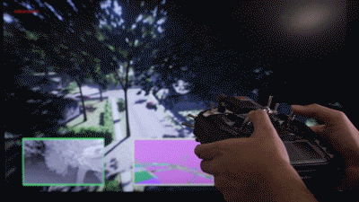
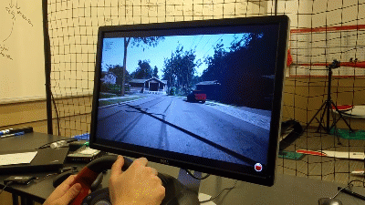

欢迎来到低空模拟器#
Air 是一款基于模拟器引擎的无人机、汽车等载具的低空模拟器。它是开源的、跨平台的，支持与 PX4 和 ArduPilot 等主流飞行控制器进行软件在环（Software-In-the-Loop, SIL）仿真，也支持与 PX4 进行硬件在环（Hardware-In-Loop, HIL）仿真，从而实现物理和视觉上都高度逼真的模拟。它以引擎插件的形式开发，可以直接集成到任何虚幻引擎环境中。同样，我们也将 Air 集成到人车模拟器 中。
我们的目标是将 Air 开发成一个人工智能研究平台，用于试验深度学习、计算机视觉和强化学习算法在无人机、汽车等载具中的应用。为此，AirSim 还提供了 API，以便以平台无关的方式获取数据和控制载具。
观看时长 1.5 分钟的快速演示
Air 中的无人机

Air 中的汽车

如何获得它#
Windows#
Linux#
macOS#
 * 构建它
* 构建它
更多详情请参阅使用预编译二进制文件的文档。
如何使用它#
文档#
查看我们关于 Air 各个方面的详细文档。
手动驾驶#
如果您拥有如下图所示的遥控器（Remote Control, RC），则可以在模拟器中手动控制无人机。对于汽车，您可以使用方向键手动驾驶。


程序控制#
Air 提供 API，方便您以编程方式与模拟中的载具进行交互。您可以使用这些 API 获取图像、状态、控制载具等。这些 API 通过 RPC 公开，并支持多种编程语言，包括 C++、Python、C# 和 Java。
这些 API 也包含在一个独立的跨平台库中，因此您可以将其部署在载具上的配套计算机上。这样，您就可以在模拟器中编写和测试代码，然后再在实际载具上执行。迁移学习及相关研究是我们重点关注的领域之一。
请注意，您可以使用 SimMode 设置 来指定默认载具或新的 ComputerVision 模式 ，这样每次启动 Air 时就不会出现提示。
收集训练数据#
您可以通过两种方式从 Air 生成深度学习的训练数据。最简单的方法是直接按下右下角的录制按钮。这将开始记录每一帧的姿态和图像。数据记录代码非常简单，您可以根据需要进行修改。

生成符合您需求的训练数据的更佳方法是通过访问 API。这样，您可以完全掌控数据的记录方式、内容、地点和时间。
计算机视觉模式#
使用 Air 的另一种方式是所谓的“计算机视觉(Computer Vision)”模式。在此模式下，没有载具或物理效果。您可以使用键盘在场景中移动，或使用 API 将可用摄像头放置在任意位置，并采集深度、视差、表面法线或物体分割等图像。
天气效果#
按 F10 键可查看各种天气效果选项。您还可以使用 APIs 控制天气。按 F1 键可查看其他可用选项。

教程#
- 视频 - 使用 Pixhawk 设置 AirSim 教程
- 视频 - 使用 AirSim 和 Pixhawk 的教程
- 视频 - 在 AirSim 中使用现成的环境
- 网络研讨会 - 利用高保真仿真实现自主系统
- 使用 AirSim 进行强化学习
- 自动驾驶烹饪手册
- 使用 TensorFlow 实现简单的避障
参与#
贡献#
如果您想了解可以贡献力量的领域，请查看 未解决的问题 。
最新内容#
- 电影摄影机
- ROS2 包装器
- 列出所有资产的 API
- movetoGPS API
- 光流相机
- simSetKinematics API
- 从现有的 UE 材质或纹理 PNG 动态设置对象纹理
- 能够生成/销毁灯光并控制灯光参数
- Unity 支持多架无人机
- 通过键盘控制手动相机速度
如需查看完整的变更列表，请查看我们的变更日志
常见问题#
如果您遇到问题，请查看 常见问题解答 并随时在 Air 存储库中发布问题。
许可证#
本项目遵循 MIT 许可证发布。请查看许可证文件了解更多详情。